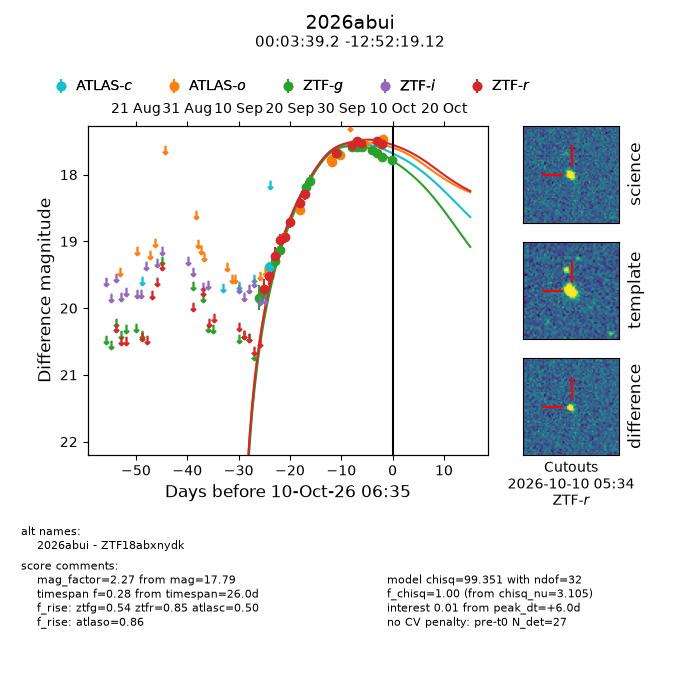
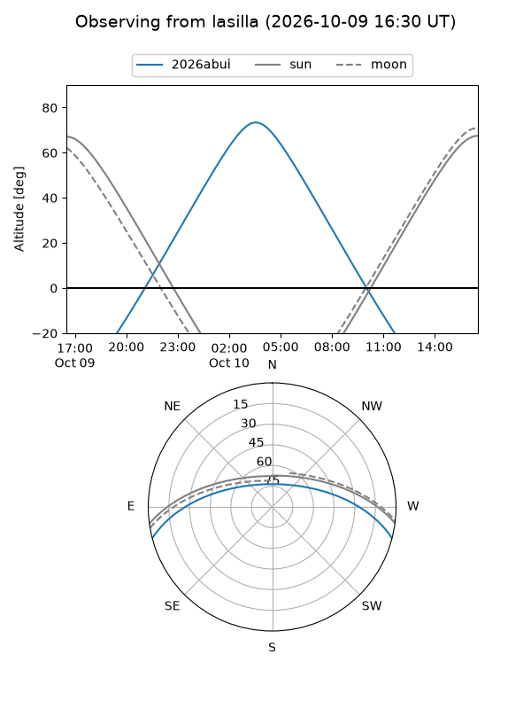
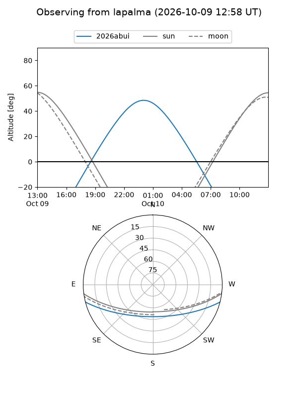
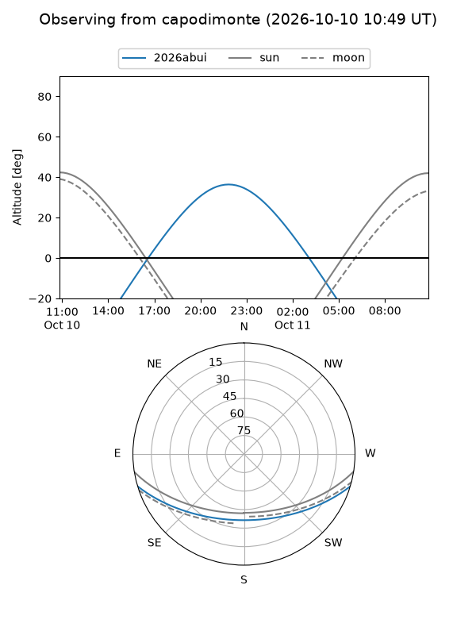
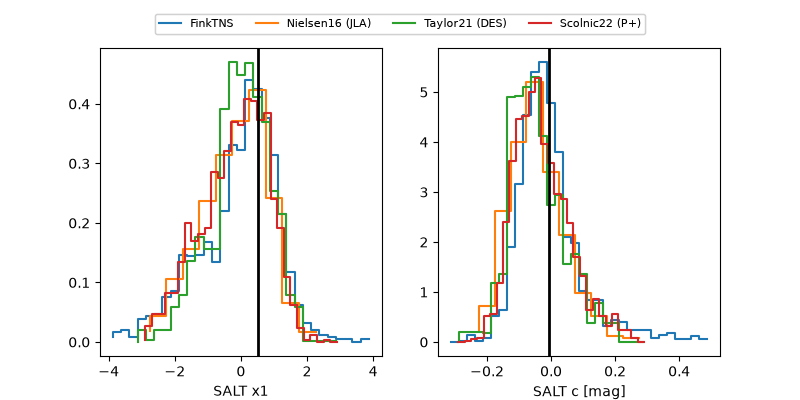

2026abui
Target 2026abui at 2026-10-10 06:36
Aliases and brokers:
FINK-ZTF: ztf.fink-portal.org/ZTF18abxnydk
Lasair-ZTF: lasair-ztf.lsst.ac.uk/objects/ZTF18abxnydk
ALeRCE-ZTF: alerce.online/object/ZTF18abxnydk
YSE-PZ: ziggy.ucolick.org/yse/transient_detail/2026abui
TNS name: wis-tns.org/object/2026abui
Direct TNS query: direct search
alt names
ZTF18abxnydk (ztf,fink_ztf)
2026abui (tns,yse)
Coordinates:
equatorial (ra, dec) = 0.9135,-12.87198
equatorial (HMS+DMS) = 00:03:39.24,-12:52:19.12
galactic (l, b) = (82.4761,-71.88126)
Flags:
peak dt: +6.0
Photometry:
last atlasc=19.39, atlaso=17.47, ztfg=17.79, ztfr=17.53
1 atlasc, 8 atlaso, 14 ztfg, 14 ztfr detections
Lightcurve

Visibility



Additional plots
